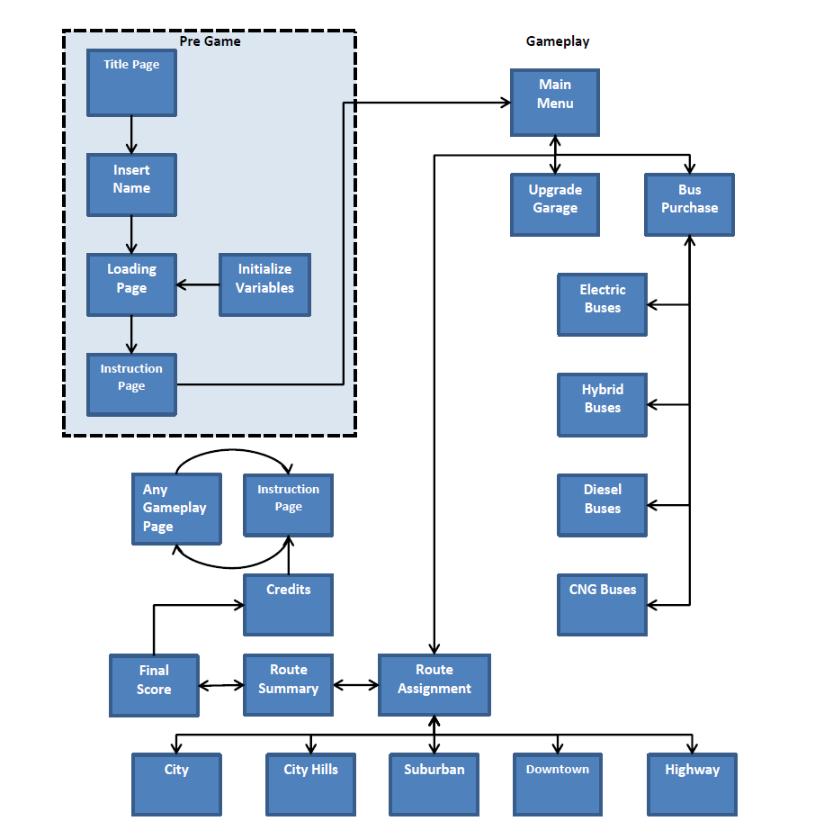
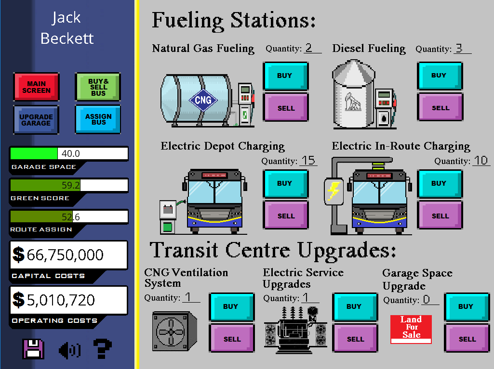
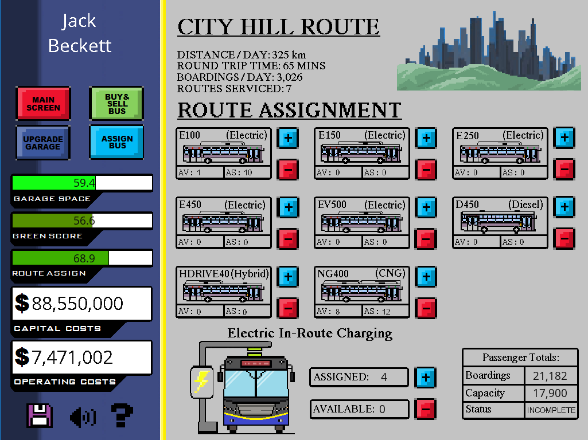

Road to
Electrification
Completed June 2018

The Road to Electrification was designed and built for the 2018 CUTA conference in Vancouver, BC in June 2018. The CUTA conference is a 2-day event where Canadian transit authorities meet to discuss their findings and stories from the year and to discuss future plans for their municipality’s transit infrastructure. This years’ conference showcased electric buses and the research each transit authority has done into preparing for electric buses. TransLink hosted this year’s conference and designed the Road to Electrification to get members involved.
The Road to Electrification was made over the span of two months and showcases 9 buses to purchase, 7 garage upgrades, 5 routes, and 4 different scores to manage. The game has an 8-bit arcade style with multiple rooms for the player to enter and interact with. The goal of the application was to create a tool for the conference participants to use that would stimulate conversation about their choices in the game.
Gameplay
The game was designed to have a non-linear flow, allowing players to move freely from any room. The path a player could choose to take are limited by the number of rooms in the game and the completion of the game is more linear in nature. A player will purchase garage upgrades, purchase buses, assigned those buses to routes, and then repeat. The gameplay was not meant to be an exhilarating one, but more towards simple gameplay dynamics with the goal of stimulating a conversation between players once completed. All values in the game are based of 2018 figures and are as close to real-world values as possible to give the player the most realistic product as possible.
Development
The development of the game was completed in GameMaker Studio 2 (GMS2) and took approximately 2 months to complete and is game is approximately 5000 lines of code. GMS2 was extremely simple to use and has a great user interface for developers to easily add sections and pages into their games.
Download and Play
Players may download the game from this link: Road to Electrification
This product was developed for educational purposes only and all rights to the game are reserved by Coast Mountain Bus Company.